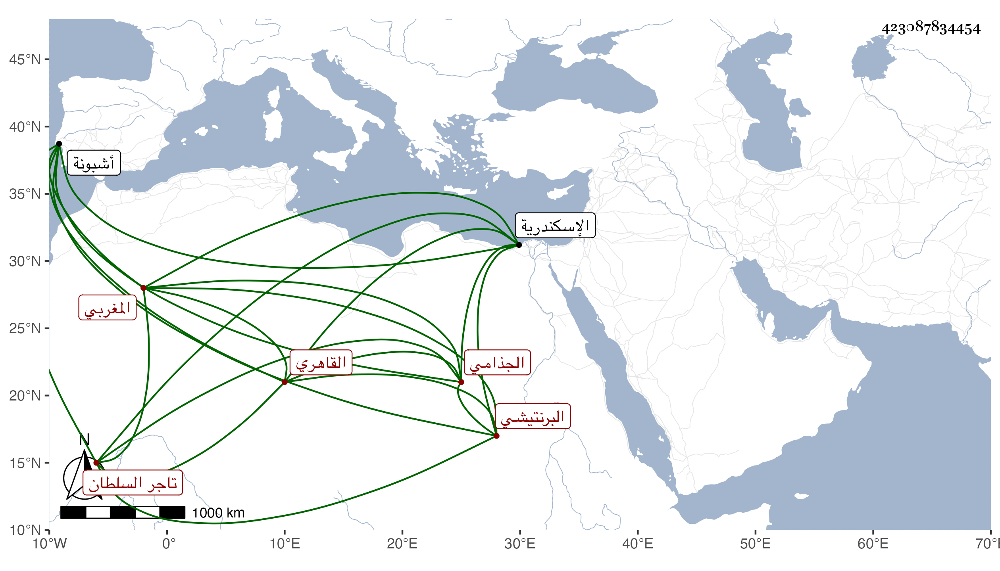

0902Sakhawi.DawLamic.ITO20230111-ara1.EIS1600.423087834454
Biography ID: 423087834454
إبراهيم بن عبد الملك بن إبراهيم الجذامي البرنتيشي نسبة لحصن من غرب الأندلس من أعمال أشبونة المغربي ثم القاهري تاجر السلطان وابن عم أبي القاسم بن محمد بن إبراهيم والد صاحبنا أبي عبد الله محمد الآتي . مات بالاسكندرية في أواخر رجب أو أول شعبان سنة ثمانين عن نحو الثمانين وسمعت من يصفه بخير وعقل وأنه كان من أصحاب الأشرف قايتباي قبل استقراره في المملكة ومن غريب ما اتفق له أنه جهز قبيل موته معظم تركته لأهله ببلاده ولم يترك عنده إلا ما يكون وفاء ... لدينه حتى لا يدع شيئا تغتصبه الدولة ومع ذلك فما سلم وحصل لوارثه أبي عبد الله المشار إليه اجحاف هنا وهناك عوضهما الله الجنة .
